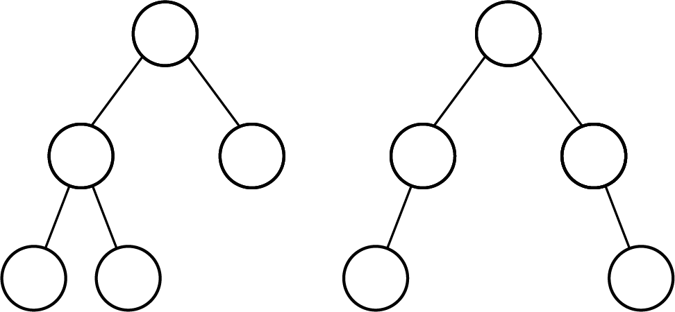
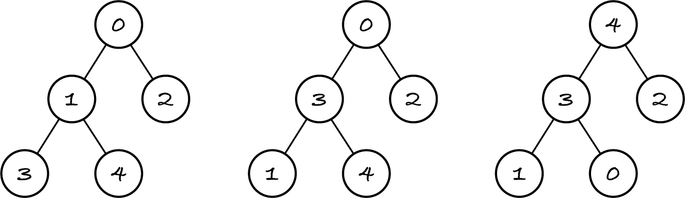
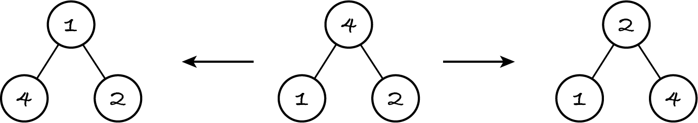

16.6. Heapsort
Selection sort searches the unsorted part for the item with the smallest key, removes it and appends it to sorted part. We can see an item’s key as the priority of being chosen next and use a min-priority queue to retrieve the next item for the sorted part.
let queue be a min-priority queue
for each item in unsorted:
enqueue item in queue with priority key(item)
let sorted be the empty sequence
while queue isn’t empty:
append front of queue to sorted
dequeue queue
This is a form of selection sort with pre-processing steps 1 and 2 to put the unsorted part in a min-priority queue, which thereby sorts it.
If we implement the priority queue with a self-balancing BST, adding and removing an item in steps 2.1 and 4.2 takes logarithmic time. Selection sort on an array takes quadratic time to do n linear searches; with a BST-based min-priority queue, it takes log-linear time.
Pigeonhole sort is also a form of selection sort with a data structure that allows getting the lowest key item in constant time.
Note: An algorithm’s complexity may be improved by using an auxiliary data structure.
Self-balancing BSTs have a memory overhead of two pointers per item and a run-time overhead to keep the tree balanced. There’s a more efficient data structure for priority queues.
16.6.1. Binary heap
In a complete tree all levels are full except possibly the last one and there are no ‘gaps’ in the bottom-level leaves, i.e. they were added from left to right. A complete tree has minimal height and is balanced. The next figure shows two balanced binary trees. Only the left-hand tree is complete: the right-hand tree doesn’t have middle leaves in the deepest level.
A binary heap is a complete binary tree with an ordering property: in a min-heap each node’s key is less than or equal to its children’s keys, whereas in a max-heap it’s larger than or equal to. A min-heap has the smallest item in the root; a max-heap has the largest. In M269, heap means a binary heap, since we’re not using other kinds of heaps.
The next figure shows a min-heap on the left, a max-heap on the right, whereas the middle tree is complete but not a heap: node 3 is smaller than one of its children but larger than the other.
Exercise 16.6.1
Can an item be searched in logarithmic time in a binary heap?
A complete binary tree can be efficiently stored in an array in level order. We put the root in index 0, its left child in index 1, its right child in index 2, and so on. This way, the node at index i has its children at indices 2×i + 1 and 2×i + 2 and its parent at index floor((i – 1)/ 2). This is illustrated by the left-hand tree of the previous figure, where the keys are the same as the nodes’ indices. For example, node 1 has children 2×1 + 1 = 3 and 2×1 + 2 = 4, and nodes 1 and 2 have parent floor((1–1) / 2) = floor ((2–1) / 2) = 0.
This approach is much more efficient in terms of memory and run-time than a pointer-based implementation of a complete tree. The latter requires three pointers per node to also access a node’s parent, whereas the array-based implementation multiplies and divides indices by 2, which is very fast in binary arithmetic.
Heapsort is the above min-priority queue version of selection sort, using a min-heap as the data structure. Before I go into the details of the heap operations, you should see them and heapsort at work in this visualisation. (Ignore the references to Miller and Ranum’s textbook.)
16.6.2. Inserting items
To add an item to a min-heap, we first put it in the next available leaf position, i.e. we append it to the array. This guarantees the tree remains complete. However, the new item may be smaller than its parent. If that’s the case, we swap it with its parent to satisfy the heap’s ordering property. If the new item is still smaller than its new parent, we keep swapping it up the tree until it becomes the root or is the child of a smaller item.
The algorithm keeps two variables with the current index of the new item and its current parent, and updates them as the item ‘bubbles’ up the tree.
append item to heap
let index be │heap│ − 1
let parent be floor((index – 1) / 2)
while index ≠ 0 and key(item) < key(heap[parent]):
swap heap[index] with heap[parent]
let index be parent
let parent be floor((index – 1) / 2)
The algorithm relies on short-circuit conjunction in step 4, so that the invalid parent index isn’t accessed when the item becomes the root.
16.6.3. Removing the root
The only item that can be removed from a min-heap is the root, which is the front of the priority queue. When the root is removed the last leaf node replaces it, so that the tree remains complete. However, this will break the ordering property: the old root was the smallest item but the new root is one of the largest items, because it was in the lowest level. To reinstate the ordering, we simply swap the new root with one of its children and keep swapping it down until it becomes a leaf again or is smaller than its children.
Promoting one of the largest items to the root only to move it back down sounds daft, but the actual point is to move the appropriate smaller items up as the swaps are made.
Does it matter which child the parent is swapped with? Let’s think with a concrete example, the min-heap of Figure 16.6.2. If we dequeue the root, it gets replaced by the last leaf with key 4. The middle of the next figure shows the new root and its children.
If we swap node 4 with its right child, as shown in the right-hand side of the figure, it still isn’t a min-heap, because the new root, with key 2, is larger than the left child. If we instead swap node 4 with its left child, node 1, as shown in the left-hand side of the figure, we reinstate the ordering property.
In general, we must swap the root with the smallest of its children. This guarantees the child being promoted to parent is smaller than its two new children: its former parent and its former sibling.
The algorithm to dequeue the root is as follows, with front being the output variable:
let front be heap[0]
let last be │heap│ − 1
let heap[0] be heap[last]
remove heap[last]
down(heap, 0)
The auxiliary function down(heap, index) moves the node at the given index down as far as possible. The easiest implementation is recursive. One base case is that the node is a leaf, the other that it’s already smaller than its children. In both cases, nothing is done. Otherwise the node is swapped with the smallest child and pushed down further.
let left be 2×index + 1
if left ≥ │heap│:
stop
let right be left + 1
if right < │heap│ and key(heap[right]) < key(heap[left])
let smallest be right
otherwise:
let smallest be left
if key(heap[index]) > key(heap[smallest]):
swap heap[index] with heap[smallest]
down(heap, smallest)
Step 2 checks that the node to be pushed down is a leaf by checking if the index of its left child is out of bounds. Step 4 uses short-circuit conjunction to first check if there’s a right child before comparing it to the left child.
16.6.4. Complexity
The worst-case scenario for inserting an item is to bubble it up from the bottom level to the root. Likewise the worst-case scenario for dequeueing the root is to push the new root (which was the right-most leaf) down back to the bottom level.
Exercise 16.6.2
What’s the worst-case complexity of heapsort?
Exercise 16.6.3
What’s the best-case scenario and complexity of heapsort?
In summary, their weaker ordering property than for BSTs and their structural property (being complete trees) makes heaps more efficient for implementing priority queues than self-balancing BSTs: although each priority queue operation takes logarithmic time for both data structures, heaps use less memory and execute operations faster.
Despite heapsort having better worst-case complexity than quicksort, in practice quicksort is preferred because heapsort accesses all parts of the array as it swaps items. If the array doesn’t fit in cache memory, then the various parts of the array are copied in and out of the cache as the item bubbles up or down. In contrast, quicksort doesn’t access any part of the array outside the partition it’s working on. Every partition small enough to fit in the cache stays there until it’s sorted. We say that quicksort has better cache locality than heapsort. A well-implemented in-place quicksort algorithm runs faster than heapsort for large arrays.
Info: TM112 Block 1 Section 3.1.2 explains cache memory.
16.6.5. Heaps in Python
Python’s module heapq implements min-priority queues with min-heaps. No new data type is introduced: a heap is represented by a list. The module includes function heappush(heap, item) to add the given item to the given heap, and function heappop(heap) to remove and return the smallest item. Note that items are assumed to be directly comparable: there’s no additional parameter for a key function.
To access the front of the priority queue without removing it, just write heap[0]. You can use any other list operation, but most of them are meaningless for priority queues and will break the heap properties.
Here’s the heapsort algorithm, with a key function. I add each item to the heap as a key–item tuple. Due to lexicographic comparison, the keys are compared first, then the items, if they have the same key. This means that items must be comparable, contrary to the other sorting algorithms, where only keys are. The key is discarded before appending the item to the output sequence.
[1]:
from typing import Callable
from algoesup import test
%run -i ../m269_sorting
from heapq import heappush, heappop
def heapsorted(unsorted: list, key: Callable) -> list:
"""Return a permutation with keys in non-decreasing order.
Preconditions:
- all items in unsorted are pairwise comparable
- for any indices i and j,
key(unsorted[i]) and key(unsorted[j]) are comparable
"""
heap = []
for item in unsorted:
heappush(heap, (key(item), item))
result = []
while len(heap) > 0:
result.append(heappop(heap)[1])
return result
test(heapsorted, sorting_tests)
Testing heapsorted...
Tests finished: 7 passed (100%), 0 failed.
Let’s confirm that heapsort is log-linear.
[2]:
from random import shuffle
for doubling in range(5):
items = list(range(100 * 2**doubling, -1, -1))
shuffle(items) # random sequence
%timeit -r 5 heapsorted(items, identity)
22.9 μs ± 55.8 ns per loop (mean ± std. dev. of 5 runs, 10,000 loops each)
48.7 μs ± 54 ns per loop (mean ± std. dev. of 5 runs, 10,000 loops each)
105 μs ± 144 ns per loop (mean ± std. dev. of 5 runs, 10,000 loops each)
225 μs ± 300 ns per loop (mean ± std. dev. of 5 runs, 1,000 loops each)
487 μs ± 584 ns per loop (mean ± std. dev. of 5 runs, 1,000 loops each)